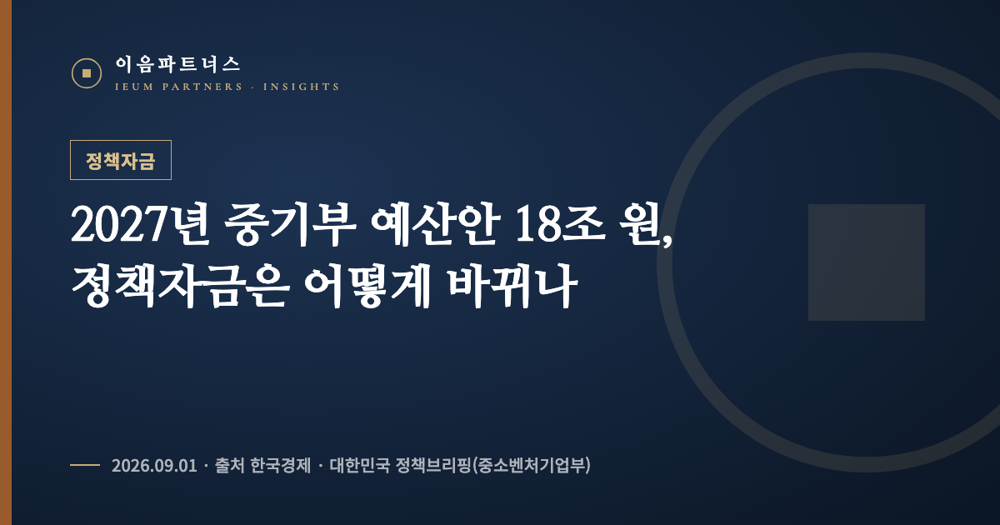

2027년 중기부 예산안 18조 원, 정책자금은 어떻게 바뀌나

중소벤처기업부(이하 중기부)가 2026년 9월 1일 2027년 예산안을 18조 724억 원으로 편성했다고 밝혔습니다. 2026년 본예산 16조 5,233억 원보다 1조 5,491억 원(9.4%) 늘어난 역대 최대 규모입니다. 이 글에서는 예산안에서 법인 대표님이 눈여겨볼 정책자금과 지원사업 변화를 정리합니다.
예산안은 국회 심의·의결을 거쳐 확정되므로 숫자는 달라질 수 있습니다. 다만 돈이 어디로 몰리는지 방향을 미리 알면 내년 신청 계획을 세우는 데 도움이 됩니다. 우리 회사에 맞는 사업이 무엇일지 궁금하다면 카카오톡 채널 이음파트너스에서 함께 살펴볼 수 있습니다.
무엇이 바뀌나
중기부는 앞서 약 3조 3천억 원 규모의 지출 구조조정을 했고, 이를 모두의창업·모태펀드 같은 신규·핵심 사업에 다시 투입했습니다(한국경제). 중기부는 “중소벤처 성장사다리를 구축하고 성장의 온기를 지역과 계층으로 확산”하겠다고 밝혔습니다(대한민국 정책브리핑).
| 구분 | 내용 |
|---|---|
| 중소기업 금융지원 | 5조 4천억 원(정책자금 융자 4조 4천억 원, 민간 대출 1조 원 규모 이차보전) |
| 수출지원기반활용 | 3,137억 원(지원체계 개편, 2배 이상 확대) |
| 기술혁신(R&D) | 2조 5,537억 원 |
| 점프업 프로그램 | 1,642억 원 |
| 피지컬 AI 실증 | 1,728억 원(신규) |
| 모두의 창업 | 4,411억 원, 지원 규모 1만 5천 명 → 2만 명 |
정책자금, 우리 회사에는 어떤 영향이 있을까
눈에 띄는 것은 이차보전(정부가 은행 대출 이자의 일부를 대신 부담해 주는 방식)입니다. 2026년 중소기업 정책자금의 이차보전은 3,670억 원(공급 기준)이었는데(2026년 운용계획), 2027년 예산안에는 민간 대출 1조 원 규모의 이차보전이 담겼습니다(대한민국 정책브리핑).
이차보전이 커진다는 것은 중진공에서 직접 빌리는 길 외에, 은행에서 대출을 받고 이자 일부를 지원받는 길이 넓어진다는 뜻으로 볼 수 있습니다. 이 경우 은행 심사도 함께 거치게 되므로, 거래 은행과의 관계와 재무제표 관리가 더 중요해질 수 있습니다.
신청은 회사가 직접 하고, 지원 여부와 금액은 각 기관 심사로 정해집니다. 예산이 늘었다고 해서 모든 회사가 더 받게 되는 것은 아니라는 점도 함께 기억해 두시길 권합니다.
창업·수출·AI 쪽은 어떻게 달라지나
‘모두의 창업’은 지원 인원을 2만 명으로 늘리고 사업화자금을 평균 2천만 원에서 3천만 원으로 올립니다. 수출지원은 수출기반바우처·수출성장패키지로 개편되면서 두 배 넘게 커지고, 중소 제조 현장의 AI 전환을 돕는 피지컬 AI 실증사업도 새로 생깁니다. 수출을 하거나 공장 자동화를 고민하는 회사라면 2027년 공고를 눈여겨볼 만합니다.
대표님이 지금 확인할 것
- 2027년에 필요한 자금이 운전자금인지 시설자금인지, 대략의 시기와 금액을 정리했는지
- 거래 은행과 대출 상담을 할 수 있는 관계인지, 최근 재무제표에 걸리는 부분은 없는지
- 수출지원·AI 전환처럼 규모가 커지는 사업 가운데 우리 회사에 맞는 것이 있는지
- 국회에서 예산이 확정되고 2027년 공고가 나오면 바로 확인할 담당자를 정했는지
참고한 자료
- 사장님 200만명에 검진비 10만원…모두의창업 예산 7배로 껑충 — 한국경제 (2026.09.01)
- 국가가 함께하는 중소벤처 성장사다리 — 대한민국 정책브리핑(중소벤처기업부) (2026.09.03)
- 중소기업, 소상공인 모두가 성장하는 대체불가 대한민국 — 대한민국 정책브리핑(중소벤처기업부) (2026.09.02)
- 내년 중소기업 정책자금 4조 4000억 원 공급…60% 이상 비수도권에 — 대한민국 정책브리핑(중소벤처기업부) (2025.12.22)
2027년 예산 흐름에 맞춰 우리 회사 자금 계획을 미리 세워 두고 싶다면 카카오톡 채널 이음파트너스로 편하게 물어봐 주세요.
※ 이 글은 일반적인 정보 제공을 위한 것으로, 개별 사안은 세무사·노무사 등 전문가와 함께 확인하시기 바랍니다.